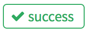

Workflow
This is a git-specific workflow that helps you contribute flawlessly you JuPedSim.
- Clone the project (for the first time)
git clone https://cst.version.fz-juelich.de/jupedsim/jpscore.git
- Change to the developement branch and create a branch with your feature.
git checkout developement
git checkout -b feature_name
- Write code and Commit changes
git commit -m "Describe here your changes"
- Push your branch to GitLab. But before doing so, test your code.
git push origin feature_name
-
Create a merge request
a Master will review your code & merge it to the developement branch (maybe).
Tips Working with Git
- Pull frequently.
- Commit often, but don’t push every commit.
- Create one commit per unit of work. Break your changes down into multiple commits, e.g. “fix bug”, “add documentation”, etc.
- Push when changes are tested.
See also 8 Tips to help you work better with Git.
Keywords for closing issues
The following keywords will close an issue via commit message:
- close
- closes
- closed
- fix
- fixes
- fixed
The closing-pattern is as follows:
((?:[Cc]los(?:e[sd]?|ing)|[Ff]ix(?:e[sd]|ing)?) +(?:(?:issues? +)?%{issue_ref}(?:(?:, *| +and +)?))+)
Top Tip: Your code is maybe fine if you see on the repository’s front page this symbol

before your commit.